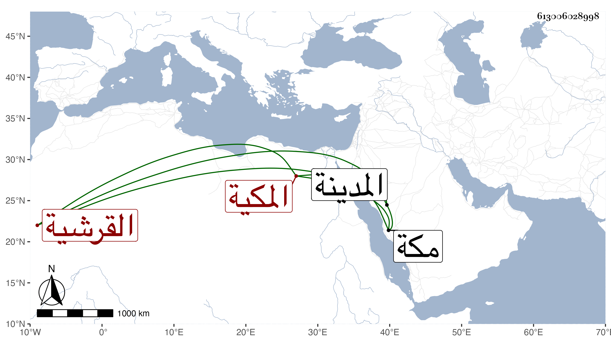

0902Sakhawi.DawLamic.ITO20230111-ara1.EIS1600.613006028998
Biography ID: 613006028998
909
أم راجح واسمها ستيت ابنة علي بن أبي البركات بن أبي السعود بن ظهيرة القرشية المكية شقيقة البرهان واخوته . ولدت سنة أربع وثلاثين وثمانمائة بمكة . وأجاز لها أبواها وعماها النجم وأبو السعادات وأمهما كمالية ابنة التقي الحرازي والزين بن عياش والبدر بن العليف وخلق ، بل أجاز لها من هو أقدم من هؤلاء في سنة ست وثلاثين حسبما أشير لبعضهم في أختها زينب ؛ وخطبت غير مرة فامتنعت ، وزارت المدينة وجاورت بها ، وكانت تذكر بكثرة الطواف ومزيد الاتقان والخير والبر والمحاسن الجمة ؛ وهي القائمة بكفالة ولد أخيها أبي السعود بعد موت أمه فكانت كأمه حقيقة . ماتت بعد تعللها مدة في أواخر يوم السبت سلخ جمادى الأولى سنة ست وثمانين ودفنت بتربة أخيها بقبر مبتكر رحمها الله وعوضها الجنة .
